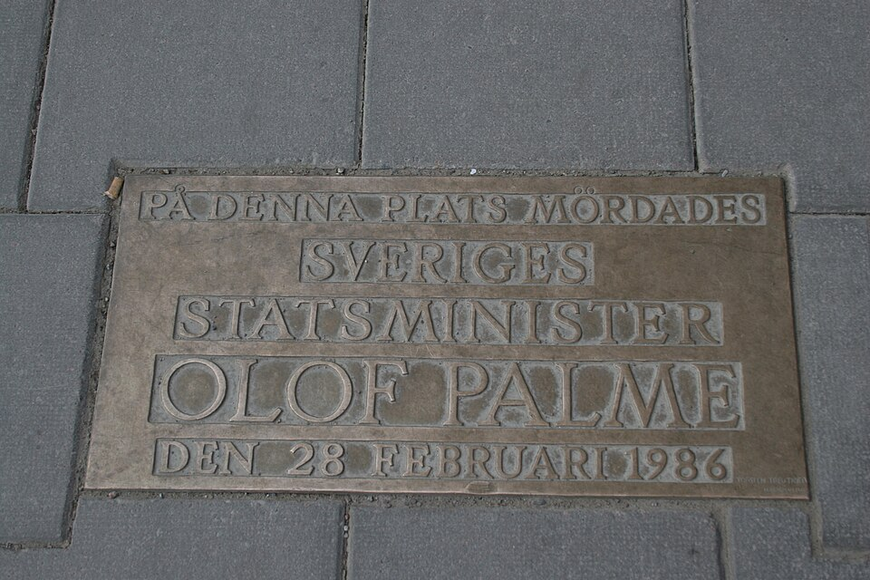

A42-POL-035 // HISTORICAL CLAIM REVIEW
The Unresolved Murder of Olof Palme
Assessment: The murder remains formally unsolved in the criminal-court sense.


The precise allegation
Swedish Prime Minister Olof Palme was shot in Stockholm in 1986. The investigation pursued numerous suspects and theories, including a far-right police network, South African involvement, and a lone gunman. In 2020 prosecutors named Stig Engström but closed the case because he was dead; the announcement was not tested in court and did not prove a conspiracy.
Chronology and political context
Palme was killed while walking home with his wife after leaving a cinema on February 28, 1986. The investigation became one of the world's largest, with early errors, changing suspect theories, and extensive public scrutiny. In 1989 Christer Pettersson was convicted then acquitted on appeal. Prosecutors closed the case in 2020, identifying Engström as their likely suspect on circumstantial grounds.
Primary historical record
Police files, the 1989 trial and appeal, commission reviews, and the 2020 prosecutor's press conference form the main record. The acquittal of Pettersson means the earlier conviction cannot be treated as a final finding. The 2020 conclusion had no trial to test witness reliability or defense arguments, and the murder weapon has not been recovered.
Corroboration and contrary evidence
Independent journalists and researchers have identified investigative mistakes and compared witness accounts, but proposed larger plots remain thinly corroborated. The 2020 prosecutor's case relied on Engström's movements, statements, and opportunity; critics note the absence of decisive forensic evidence. South African apartheid-era hostility toward Palme is documented, but motive is not proof of an operational South African plot.
What remains uncertain
Whether Engström was the shooter, whether a second participant helped, and whether official negligence obscured evidence remain unresolved. Witness memories changed over decades, and the crime scene was inadequately controlled. Without a trial, the final prosecutorial theory has not undergone the adversarial process required for a definitive conviction.
Calibrated verdict
The murder remains formally unsolved in the criminal-court sense. Engström is a plausible but untested suspect, not a judicially established killer. A broader conspiracy remains possible yet unproven. The case illustrates why a long investigation, official closure, or plausible motive cannot substitute for converging forensic and testimonial evidence.
What evidence could change this assessment
A recovered weapon matched to the shooting, authenticated contemporaneous communications, or independently corroborated admissions could resolve the case. Reanalysis of preserved evidence using transparent methods could support or exclude Engström. Records showing what investigators knew about credible threats before the murder could clarify whether failures were ordinary error or deliberate obstruction.
Sources and source limits
- Swedish Prosecution Authority — Palme investigation closureOfficially explains the 2020 suspect theory and closure; it was not a court-tested finding and remains contested.
- Swedish National Archives — Olof Palme investigation recordsCatalog for archival records; access and digitization vary, and archival presence does not establish any theory.
- Encyclopaedia Britannica — Olof PalmeConcise biography and murder chronology; does not independently adjudicate the competing investigative theories.